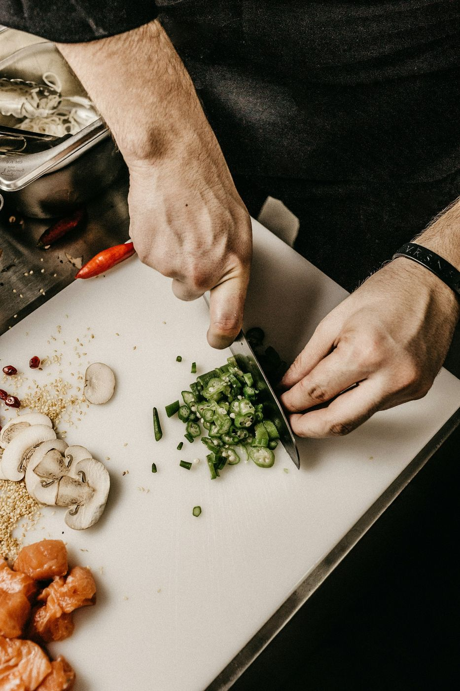
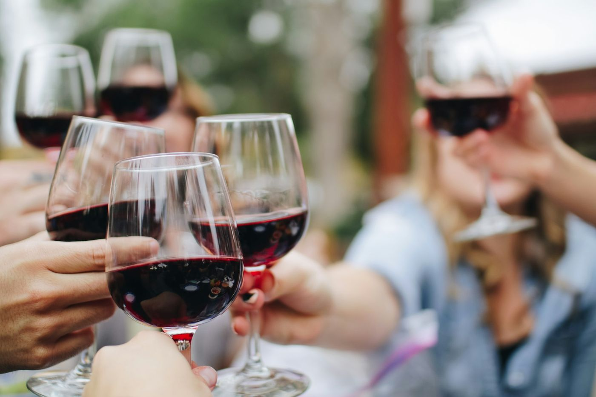

Restaurant gastronomique — Lyon 1ᵉʳ
Une table de caractère, sur les quais de la Saône
Depuis 1929, la Maison Aurèle cultive l'art de recevoir à la lyonnaise : une cuisine française contemporaine de saison, une cave d'exception et la passion du geste juste.
Ouvert du mardi au samedi
Déjeuner 12 h – 13 h 45
Dîner 19 h 30 – 22 h 30
17 quai Saint-Vincent, Lyon

La Maison
Une famille, une adresse, une obsession : le produit
Née en 1929 comme une table d'hôtes de quartier, la Maison Aurèle n'a jamais quitté son quai. Quatre générations plus tard, elle continue de servir une cuisine de saison, taillée au plus près du marché et des fermes de la Dombes, du Beaujolais et du Lyonnais.
Derrière la façade de pierre, une salle de trente-cinq couverts, une cave voûtée du XVIIᵉ siècle et une brigade qui connaît chaque fournisseur par son prénom.
Découvrir notre histoire
La Cuisine
Le goût d'abord. Tout le reste suit.
Kenji Tanaka, chef exécutif depuis 2016, compose une cuisine française contemporaine d'inspiration nippone : la précision du geste, le respect du produit, la justesse de l'assaisonnement.
Ardoise du marché le midi, grande dégustation le soir : chaque assiette naît le jour même, de la pêche du matin aux légumes de la ferme des Terres Froides.
— Kenji Tanaka, chef exécutif
Rencontrer le chefLes Menus
Trois manières de vivre la table
Prix par personne, service compris. Nos menus évoluent au fil des saisons et du marché.
Carte blanche
La Table d'Aurèle


Le Livre d'or
Ce que nos hôtes en retiennent
4,9/5 sur 312 avis recueillis auprès de nos hôtes.
Le pigeonneau est un souvenir que je garderai longtemps. Un service d'une précision rare, sans jamais faire sentir son poids.
Nous avions privatisé la cave voûtée pour les 60 ans de mon père. La soirée a été d'une élégance rare — et la quenelle, un manifeste.
Le déjeuner du samedi, à la table d'Aurèle, est la plus belle initiation à Lyon que je connaisse. J'y emmène tous mes visiteurs.

Bons cadeaux
Offrir la maison
Un bon cadeau Maison Aurèle, c'est une promesse de soirées lentes : déjeuner du marché, Carte blanche ou nuit à la cave voûtée. Montant libre à partir de 100 €, valable dix-huit mois, présenté dans une pochette toilée cachetée à la cire.
- FormulesMontant libre, ou menu au choix (Sillon, Carte blanche, accords inclus)
- Validité18 mois, prolongeable sur simple demande
- RemisePar courrier, en retrait au restaurant, ou e-card imprimable
Informations
Venir à la maison
| Mardi — Vendredi | 12 h – 13 h 45 · 19 h 30 – 22 h 30 |
| Samedi | 12 h – 13 h 45 · 19 h 30 – 22 h 30 |
| Dimanche & lundi | Fermé |
Service du déjeuner jusqu'à 13 h 45, dernière commande du soir à 21 h 30.
Toutes les informations pratiques